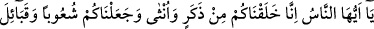
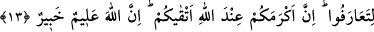
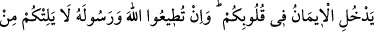
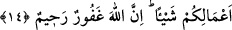

ALLAH YANINDA
EN DEĞERLİ OLANINIZ
13. Ey insanlar! Doğrusu biz sizi bir erkekle bir dişiden yarattık. Ve birbirinizle
tanışmanız için sizi kavimlere ve kabilelere ayırdık. Muhakkak ki Allah yanında en
değerli olanınız, O’na karşı en takvalı olanınızdır. Şüphesiz Allah bilendir, her
şeyden haberdardır.
14. Bedevîler «İnandık» dediler. De ki: Siz iman etmediniz, ama «Boyun eğdik»
deyin. Henüz iman kalplerinize yerleşmedi. Eğer Allah’a ve elçisine itaat
ederseniz, Allah işlerinizden hiçbir şeyi eksiltmez. Çünkü Allah çok bağışlayan, çok
esirgeyendir.
“Ey insanlar! Doğrusu biz sizi bir erkekle bir dişiden yarattık.” Yani Âdem ve
Havva (a.s.)’dan yarattık. Ya da her birinizi bir anne ve babadan yarattık. Herkes bir
erkek ve bir dişiye mensub olmada müsâvîdir. Onun için de neseble övünecek bir şey
yoktur.
İnsanlar yaratılış olarak denktirler
Babaları Âdem anaları Havvâ
Eğer asılda övünülecek bir neseb varsa
O da toprak ve sudur.
Nesebiyle iftihâr eden kimse,
Bilgi ve adâlet yolundan ne kadar da uzağa düşmüştür.
Nesebi sebebiyle bir kimsenin diğerine üstünlüğü yoktur,
Çünkü her ikisinin de aslı bir Âdem ve Havvâ’dandır.
Bu âyetin sebeb-i nüzûlü şöyledir: Mekke’nin fethinden sonra Peygamber (s.a.) Bilâl
(r.a.)’a ezan okumasını emretmişti. O da Kâbe’nin üzerine çıkıp ezan okudu. O gün
serbest bırakılanlardan biri olan İtab b. Üseyd dedi ki: “Hamdolsun ki Allah babamın